Diagramas Organizatech
Abre cada SVG para verlo con zoom desde el celular. El diagrama 09 es el flujo completo y es el mas grande.
01-mapa-general-de-navegacion.svg

02-login-registro-y-persistencia.svg

03-registro-de-entrenamiento-creacion-de-rutina.svg

04-entrenamiento-diario.svg

05-panel-principal.svg

06-comparacion-semanal.svg

07-ciclos-e-historial.svg

08-modelo-de-datos-y-calculos.svg

09-diagrama-general-completo.svg
